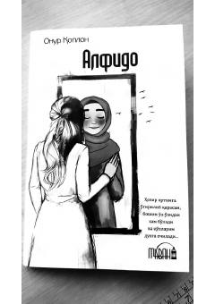

A1Imon, umid va tavba haqidagi islomiy roman — har bir qalbga tegishli.
"Alfido" — turk yozuvchisi Onur Qoplonning Zaynaб va boshqa qahramonlar hayoti orqali inson qalbidagi imon, umid va tavba mavzularini yorituvchi romani. Kitob Abror Adham o'g'li tomonidan o'zbek tiliga tarjima qilingan bo'lib, tarjimon so'zboshida asar unga kuchli ta'sir qilganini samimiy tarzda bayon etadi. Roman faqat bir qahramon haqida emas, balki har bir o'quvchining o'z hayotini aks ettiruvchi ko'zgu sifatida taqdim etiladi.